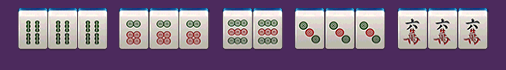
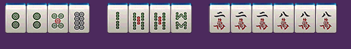
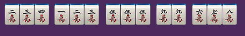
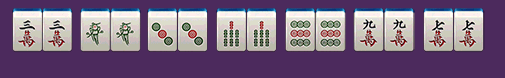
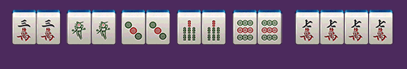
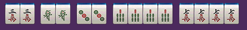

湘阴推倒胡麻将游戏规则
一、湘阴麻将玩法
湘阴麻将中，没有东南西北中发白字牌和梅兰竹菊字牌，只有万、条、筒，一到九各4张，共108张；扎鸟翻倍
二、胡牌型：
1.小胡：任意一对，其余成坎或顺子或一句话，即可胡牌（只能自摸，杠上炮和抢杠胡外）基础分1分；

2.大胡：任意一对牌作将，即可以胡，基础分5分
A.碰碰胡：即任意一对牌皆可做将，可碰，可杠，可自摸，可放炮；

B.将将胡：玩家手上每一张牌都为2、5、8，可碰，可杠，可自摸，不放炮

C.清一色：玩家手上每一张牌为筒、索、万任意门，乱将，可碰，可吃，可自摸，可放炮；

D.七小对：玩家手上胡牌时，任意七对牌，不能下坎碰；（可点炮）

E.豪华七对：玩家手上胡牌时，手中任意5对，另外有两个四张一样的牌，在七小对的基础上再加番；（可点炮）

F.双豪华七对：玩家手上胡牌时，手中任意3对，另外有两个四张一样的牌，在豪华七对基础上加番；（可点炮）

G.海底：最后一张牌为海底。海底胡牌，至少为大胡，需要根据当时牌型决定是（平胡边大胡，大胡变加番）；
湘阴麻将可海底可漫游，听牌者可有摸海底权利，如果第一玩家不要海底，第二玩家才可要，依次类推；
H.海底炮：如果甲玩家要了海底，而又没有胡牌，乙玩家没有得到海底牌，而又可以胡这样牌，即乙玩家胡牌，甲玩家放炮。同样如果丙丁玩家胡牌则为通炮；
I.杠上开花：玩家有四张一样的牌，即可选择开杠（听牌情况下）。开杠要补2张牌，两张任意一张牌被开杠者胡则为杠上开花（平胡算大胡，大胡则加番，两张都胡累加算）；
注：开杠即为开骰，开骰之后哪对应点数的一墩牌（2张）骰子点数如果点数大于牌墩数则按最小点数，如果最小点数大于牌墩数，则开骰失败，不发牌给开骰者，开骰者牌不能在动。如果牌墩数只剩下最后一墩，则不能开骰
J.抢杠胡：胡别人明杠的牌，即在对手碰牌后摸到最后第四张相同的牌要明杠补张时，可以抢胡杠胡；（暗杠和放杠、不能抢杠，只能是明杠补张情况）（平胡变大胡，大胡变加番）；
K.杠上炮：如果开杠者掷骰子摸出的牌，开杠者如不能胡而其他玩家可以胡属于杠上炮（平胡变大胡，大胡变加番）；
三、特别说明：
1.湘阴麻将中，番数=倍数；
2.湘阴麻将不分庄闲，基本分数小胡1分，大胡5分起；
3.大胡不封顶，即可番上番（5*2^(n-1)次方算法）；
①碰碰胡&将将胡：（2番：5*2=10分）②七小队&清一色：（2番：5*2=10分）
③豪华七对：（2番：5*2=10分）
④豪华七对&清一色：（4番：5*2*2=20分）
⑤四碰单调（碰碰胡&全求人）&清一色：（4番：5*2*2=20分）
⑥四碰单调&将将胡：（4番：5*2*2=20分）
⑦四碰单调&将将胡&海底胡：（8番：5*2*2*2=40分）
⑧杠上花/杠上炮：如果掷骰子后摸出2张牌都可以胡，就算（胡牌之和）（杠上炮则按开杠玩家手中牌算，进多少出多少）小胡变大胡（1番：5分）；大胡变加番（2番:5*2=10分）
⑨抢杠胡:1番：5分：
⑩海底胡/炮：（海底炮则按要海底牌的玩家手中牌算，进多少出多少）小胡变大胡（1番：5分）；大胡变加番（2番:5*2=10分）
4.通炮：即几个玩家可胡同一张牌，此牌即为通炮，湘阴麻将允许一炮多响，下一把庄家为放炮方；
通炮情况，按胡牌玩家手牌算分，中鸟1/5/9则翻倍，其他的只在原基础上加一个大番的分数（小胡不存在放炮的情况）；
杠上炮的情况下，需要分情况算分：
①两张杠出的牌，都能胡，则计算2个大番，然后按每张牌的胡牌人数计算分数
②只能胡其中一张，则计算一个大番，然后按胡牌人数来计算分数
③1接炮，则一个人分数全拿，2人接炮，则该张牌的分数评分，3人接炮，则中鸟的玩家多拿一番
5.杠（杠牌后：流局不流杠，有杠就有分，不与中鸟个数相乘，开杠拿（2张牌），补张拿（1张牌））
①杠：自己抓到3张相同的牌，其他玩家打出1张相同牌，则打出该牌的玩家出2分，杠牌玩家进2分；
②明杠：自己碰牌后，自己又摸到相同的牌即可开杠/补张，其他三家每人出1分，杠牌玩家进3分；
③暗杠：自己抓到4张相同的牌，轮到自己摸牌后，可以开杠/补张，属于暗杠，其他三家各出2分，杠牌玩家进6分；
④补张与开杠
A.明杠补张胡牌算自摸，按当前牌型算分，亦有可被其他玩家抢杠胡；
B.补张从最后一叠牌的上张拿起，一次拿一张，不可随意选择；
C.开杠不能被抢，开杠后可以胡牌/放炮，优先开杠者先胡；
D.如果只剩下最后一张海底牌、其他玩家不能杠和补张，只能选择要或者不要海底；
6.过手禁胡
一轮牌内，如果B打出一张牌，商家A可以胡牌但不能胡，即漏胡了，接下来CD同一轮打出B同一张牌，因为没有过手，A不准胡。必须A吃碰杠摸牌后自动解除；
7.庄家分配
①第一局创建房间者为庄家
②以后谁胡牌，则为下一局的庄家
③如果出现通炮的情况，则放炮的玩家为下一局庄家
④如果有人要海底，最后没有胡牌则要海底的玩家下局为庄家
⑤如果4个玩家都不要海底牌，则下一轮庄家为第一个可选择海底牌的玩家
8.计算规则
小胡： 自摸 1分*3=3分，不能接炮（除杠上炮、抢杠胡、海底炮外，参考3.4算分）
大胡： 自摸 5分*3=15分，可放炮5分；（参考3.4算分）
9.扎鸟规则
在胡牌之后，叫胡的一家（胡牌的玩家）按顺序摸1/2张牌，为鸟;
鸟的点数从本轮庄家逆时针开始计算；
如果命中胡牌者或点炮者，则叫中鸟；
如果玩家海底胡牌，则直接以海底牌为鸟牌算；
中鸟算法：扎中1只鸟为2倍，（默认1只鸟）
胡牌者：自摸扎鸟1/5/9为“全中”，2/6中下家，3/7中对家，4/8中上家；
10.最终得分：胡牌扎鸟后得分+杠分